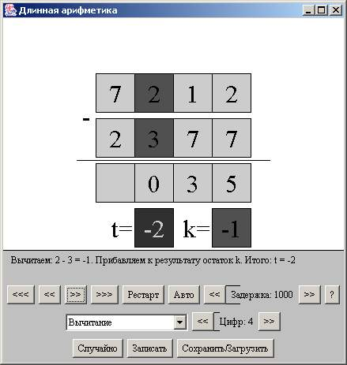
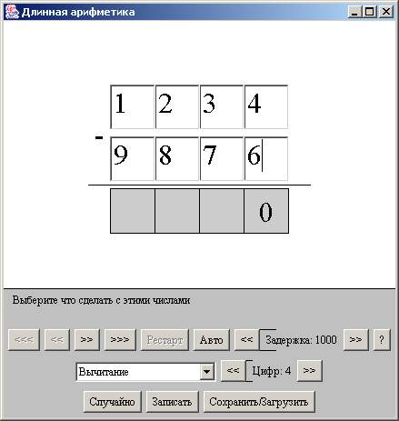
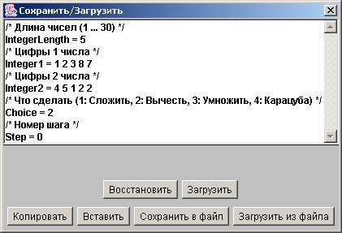
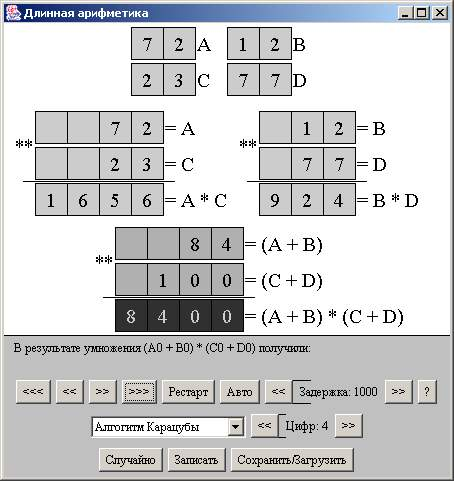
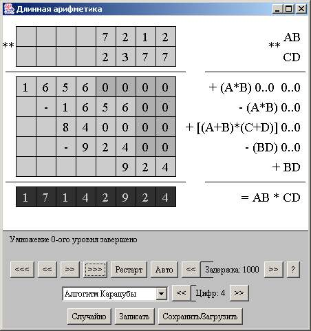

Длинная арифметика - описание интерфейса визуализатора
Общий вид

На экране отображаются начальные числа, действия над ними и ответ (в случае завершения алгоритма).
Визуализатор содержит следующие элементы управления:
- Кнопка "<<<" - большой шаг назад
- Кнопка "<<" - шаг назад
- Кнопка ">>" - шаг вперёд
- Кнопка ">>>" - большой шаг вперёд
- Кнопка "Рестарт" - переход визуализатора в начальное состояние
- Кнопка "Авто" - запускает автоматическую демонстрацию работы алгоритма
- Кнопки "<< Задержка: 1000 >>" - устанавливает задержку между шагами при
автоматической демонстрации работы алгоритма
- Кнопка "?" - предоставляет информацию об авторе визуализатора
- Выбор "Сложение", "Вычитание", "Классическое умножение", "Алгоритм Карацубы" - Выбор действия над начальными числами
- Кнопка "<< Цифр: 4 >>" - устанавливает количество цифр в числах
- Кнопка "Случайно" - Записывает случайные числа
- Кнопка "Ввод чисел" и "Записать" - Редактирование начальных данных
- Кнопка "Сохранить/Загрузить" - позволяет сохранять и загружать состояния визуализатора.
Редактирование
При нажатии на кнопку "Ввод чисел" включается режим редактирования,
в котором можно ввести начальные числа.

Сохранение и загрузка
При нажатии на кнопку "Сохранить/Загрузить" включается режим,
в котором можно сохранить и загрузить состояния визуализатора.

Общий вид алгоритма Карацубы
 